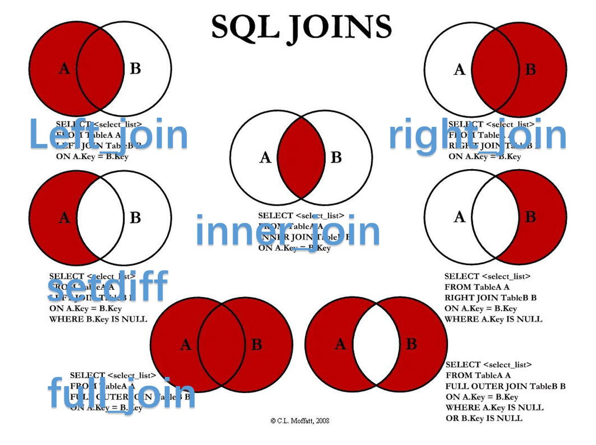

Data Manipulation in R
Bruce Zhao
July 19, 2016
为什么要用R?
- txt/csv 数据导入excel不够灵活
- 数据量过大,excel处理缓慢甚至崩溃
- 行转列,永远的痛…
- 时间一长完全想不起当初干了啥
- …
一. 基本功之数据导入
载入要用到的包
#下载
install.packages(c("readr","readxl","dplyr"))
#下载一次,以后都可以直接加载使用
library(readr)
library(readxl)
library(dplyr).txt文件导入
txt文件一般是用 \t 来隔开数据的.
# 一般情况:
read_tsv("test-data/test.txt", col_names = F) #第一行是否为变量名
#更复杂一点的:
read_tsv("test-data/test-encoding.txt",col_names = F,
locale = locale(encoding = "GB2312"), #编码问题
col_types = cols(X6="c",X10="c")) #数据类型两行命令解决90%以上txt数据的读入问题!
关于编码问题: notepad++ .
关于数据类型,常用的有:
- “c” character 字符串
- “d” double 实数
- “D” y-m-d 日期
- “T” 时间日期型
.csv文件导入
csv文件一般是用 , 来隔开数据的.
# 一般情况(utf-8):
read_csv("test-data/test.csv", col_names = F,
col_types = cols(X6="c",X10="c")) #特殊数据类型
#涉及到编码问题的:
read_csv("test-data/test-encoding.csv",col_names = F,
locale = locale(encoding = "GB2312"), #编码问题
col_types = cols(X6="c",X10="c")) #数据类型剩下的1%怎么办?
#奇葩分隔符 "|"..
read_delim(file = "文件名", delim="奇葩分隔符", ...)
# 逐行读入
read_lines("文件名",skip=0,locale = locale(encoding = "编码"))
# 读取粘贴板
readClipboard()- 逐行读入,简单粗暴, 但需要后续处理;
- 读取粘贴板的数据适用于少量快速操作;
- 更多: 文本处理利器之“正则表达式”.
xls/xlsx数据的导入
这么常见的数据类型就不用多说了,直接上代码:
read_excel("xlsx/教院附小.xlsx",sheet = 1, col_names = F)- 默认读取第一个sheet
- 默认“col_names=T”,第一行有变量名称
- 关于性能测试后面会讲到
SQL数据库导入
公司的数据库主要有SqlServer和MySQL
install.packages(c("RODBC","RMySQL"))
library(RODBC)
#ODBC连接MySQL,需要下载ODBC驱动
con <- odbcConnect("pcdp")
odbcGetInfo(con) #查看连接信息
cog_memory <- sqlQuery(con,"select * from tongyongbiao limit 6",
stringsAsFactors=F)
cog_memory
odbcClose(con) #关掉接口
#写入
# sqlsave/sqlupdate
#通过RMySQL包直接连接MySQL
library(RMySQL)
conn <- dbConnect(RMySQL::MySQL(),dbname="pcdp",username="****",
password="****",
host="psydb88pcdp.mysql.rds.aliyuncs.com",
port=3306)
show(conn) #查看连接信息
dbGetInfo(conn)
dbSendQuery(conn,"set character set gbk") #设置中文编码
res <- dbGetQuery(conn,"select * from tongyongbiao limit 6")
res
dbDisconnect(conn) #用完关掉接口
#写入
#sqlData如果你能熟练使用上面命令,就已经走通了第一脉,接下来还需要修炼内功,才能走通第二脉.

二. 内功修炼之数据整理
拆分/合并
行转列
group_by
表连结

过滤抽取连接
semi_join(x,y): 数据集x中能与数据集y中匹配的记录.
anti_join(x,y): 数据集x中能与数据集y中不匹配的记录.
原文:
semi_join(x,y):keeps all observations in x that have a match in y.
semi_join(x,y):drops all observations in x that have a match in y.
更多资料: https://cran.r-project.org/web/pacakges/dplyr/vignettes/two-table.html
三. 终结篇之结果输出
导出txt/csv格式
write.csv()
write_csv()
write.table()
write_tsv()导出xlsx格式
install.packages("openxlsx")
library(openxlsx)
#单个sheet
write.xlsx(data1,file = "xxx.xlsx")
#多页导出
wb <- createWorkbook()
addWorksheet(wb,"sheet1")
addWorksheet(wb,"sheet2")
writeData(wb,sheet = 1,data1)
writeData(wb,sheet = 2,data2)
saveWorkbook(wb,"xxx.xlsx")